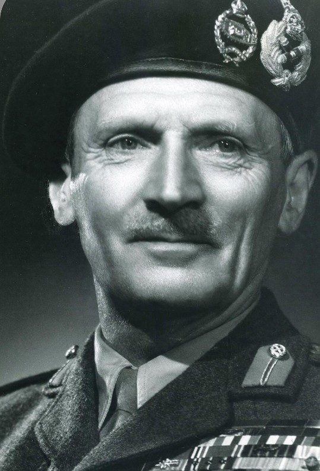

Bernard Law Montgomery (1887–1976), surnommé « Monty », est l’un des généraux britanniques les plus célèbres de la Seconde Guerre mondiale. Connu pour sa préparation minutieuse et son style de commandement rigoureux, il devient une figure centrale des forces alliées.
Montgomery prend le commandement de la 8e armée britannique en Afrique du Nord en 1942. Il remporte la bataille d’El Alamein, première grande victoire terrestre alliée contre l’Axe. Il dirige ensuite les forces terrestres alliées lors du débarquement de Normandie en juin 1944, puis participe à la libération de l’Europe du Nord. En septembre 1944, il lance l’opération Market Garden, ambitieuse mais partiellement infructueuse.
Montgomery est étudié comme l’un des principaux stratèges alliés. Sa victoire à El Alamein marque un tournant majeur dans la guerre du désert, et son rôle en Normandie contribue directement à la libération de l’Europe. Figure parfois controversée, il reste néanmoins un pilier de l’effort militaire britannique.